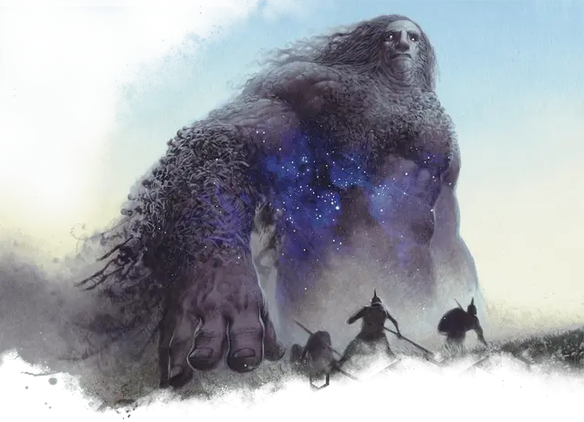

Великан надвигающегося рока
Doomwake Giant
Огромный Великан, законно-злой

Класс Доспеха 15 (природный доспех)
Хиты 162 (13к12 + 78)
Скорость 40 футов
| мод | спас | ||
|---|---|---|---|
| СИЛ | 24 | +7 | +7 |
| ЛОВ | 12 | +1 | +1 |
| ТЕЛ | 22 | +6 | +10 |
| мод | спас | ||
|---|---|---|---|
| ИНТ | 12 | +1 | +1 |
| МДР | 14 | +2 | +6 |
| ХАР | 16 | +3 | +3 |
Навыки Восприятие +6, Запугивание +7
Иммунитет к урону некротическая энергия, яд
Иммунитет к состояниям испуг, отравление
Чувства тёмное зрение 120 футов, пассивное Восприятие 16
Языки Великаний
Опасность 11 (7200 опыта)
Бонус мастерства +4
Особенности
Аура Эреба. Любое существо, которое начинает свой ход в пределах 10 футов от великана, должно преуспеть в спасброске Телосложения Сл 18, иначе получит 10 (3к6) урона некротической энергией и не сможет восстановить хиты до начала своего следующего хода. При успехе существо становится невосприимчивым к Ауре Эреба великана в течение 24 часов.
Сопротивление магии. Великан совершает с преимуществом спасброски от заклинаний и прочих магических эффектов.
Действия
Мультиатака. Великан совершает две атаки Ударом.
Удар. . Рукопашная атака оружием: +11 к попаданию, досягаемость 15 футов, одна цель. Попадание: 20 (3к8 + 7) дробящего урона плюс 10 (3к6) урона некротической энергией.
Вредоносные ветра (Перезарядка 5-6). Великан выдыхает мощный порыв ветра, который создает облако смертоносного тумана 60-футовой линией шириной 10 футов. Все существа в этой линии должны совершить спасбросок Телосложения Сл 18. При провале существо получает 36 (8к8) урона некротической энергией и падает ничком. При успехе существо получает половину этого урона и не падает ничком.
Описание
Вера — это мощная сила в Теросе, способная творить чудеса и изменять мир, но не всегда к лучшему. Великаны надвигающегося рока возникают из пагубных страхов, которые заражают целый город или регион. Если достаточное количество смертных достаточно долго будут бояться разрушения, их ужас может проявиться в виде одного из этих огромных существ, порождённых Никсом. Оказавшись на свободе, великан надвигающегося рока приходит в ярость, исполняя пророчество, в которое верили смертные. После этого они обычно бродят по краям мира, где со временем либо исчезают, либо становятся легендами, живущими своей собственной ужасной жизнью.
Великаны
Целый спектр великанов претендует на территории по всему Теросу, черпая силу из аспектов самого мира — от древнего камня и бушующего пламени до глубин морей и небес. В отличие от многих существ из легенд, большинство великанов обязаны своим существованием не Никсу и мечтам смертных, а природным силам земли. В результате теросские великаны обычно наделены элементами, которые они воплощают, проявляющиеся в виде пылающих бород, замерзшей кожи, волос, потрескивающих от молний, или других первичных воплощений.
Однако, помимо этих первичных великанов, другие великанов наполняют сказания Тероса.